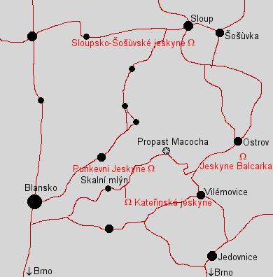

Moravský Kras
Moravian Karst
|  |
| Image: map of the Moravian Karst. |
The Moravian Karst is the most important karst area of the Czech Republic. It is a nature reserve with an area of approximately 100 km², 5km wide and 24km long. It is explored since centuries and is one of the so called classic karst areas, which means it was known and described early in the 19th century.
Four of the caves in this area are accessible to the public. Other sights include the numerous dolines, loosing streams, karst springs and some wild caves.
The underground system of the Punkva river drains most of the Moravian Karst, and measures all together more than 20km of cave systems. Though definitely connected, not all connections have been explored. Punkva Cave, the show cave, is located at the lower end, and the water of the river leaves the cave where the boats leave the show cave. The water then flows down Pusty zleb (deserted valley) vanishing once again in a ponor but reappearing only a hundred meters down the valley.
The Macocha Abyss is the upper end of this cave, with water flowing through the impassable debris of its bottom. A siphon at the far end leads to Nova Amateurska, the biggest part of this cave system. The connection is proven by dying and is obvious when studying a map. The Amateurska has numerous entrances, most of them from the plateau going down between 50m and 120m to the level of the river. The main entrance is an artificial tunnel from Pusty zleb, which allows easy access to the main passage.
This passage branches into two passages, one leading north to Sloup, the other one leading northeast to Ostrov. The branches end at siphons, most of them followed by other caves which also belong to this drainage system. The upper end of the whole system are numerous ponors at the border between limestone and the surrounding impermeable rocks.
 Pavilon Anthropos
Pavilon Anthropos Jeskyně Balcarka
Jeskyně Balcarka Býčí skála
Býčí skála- Císařská jeskyně
- Kateřinská jeskyně
- Králova jeskynĕ
 Propast Macocha
Propast Macocha- Punkevní jeskyně
- Sloupsko-Šošùvské jeskyně
- Ochozská jeskynĕ
- Jeskyně Výpustek
 Landschaft und Höhlen im Mährischen Karst
(visited: 28-JUL-2011)
Landschaft und Höhlen im Mährischen Karst
(visited: 28-JUL-2011)

 )
)